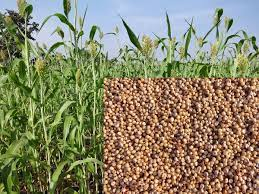
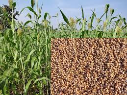

Ragi, also known as finger millet, is a nutritious cereal crop cultivated primarily in India and Africa. It requires well-drained soil with a pH range of 5.5-7.5 and is generally sown during the rainy season. Adequate irrigation, especially during critical growth stages, is crucial for optimum yield.
is done when the plants turn golden brown, typically around 3-4 months after sowing
Wheat is a widely cultivated crop known for its staple value and versatility. It requires well-drained soil and a temperate climate for successful cultivation. Proper management practices, including regular soil testing, pest control, and timely sowing, are essential for optimal growth. Adequate irrigation during critical growth stages and careful monitoring of moisture levels ensure healthy development.
Harvesting takes place when the crop reaches maturity, typically around 110-130 days after sowing, using machinery like combine harvesters.
Paddy is a major cereal crop commonly cultivated in warm and humid regions.
It requires careful cultivation management, including proper seed selection, soil preparation, and nutrient management, to ensure optimal growth. Adequate irrigation is crucial throughout its growth stages, with regular flooding or controlled water management methods. Harvesting involves cutting the mature crop, threshing to separate grains from the stalks, and drying before storage.
Sugarcane is a tall perennial grass cultivated for its sweet sap, which is processed into sugar and various other products.
It requires well-drained soil, warm temperatures, and ample sunlight for optimal growth. Proper management practices include regular weeding, fertilization, and pest control. Harvesting is done by cutting the mature stalks close to the ground and stripping away the leaves, leading to the extraction of the sugary juice.
Jowar, also known as sorghum, is a versatile crop cultivated for its grains and fodder.
It is a hardy crop that can thrive in a variety of climates and soils, requiring low to medium rainfall.Jowar cultivation involves sowing the seeds at the onset of the rainy season, managing weeds and pests, and providing occasional irrigation. The crop is harvested when the grains are fully mature, typically after 90 to 120 days of sowing.


 
